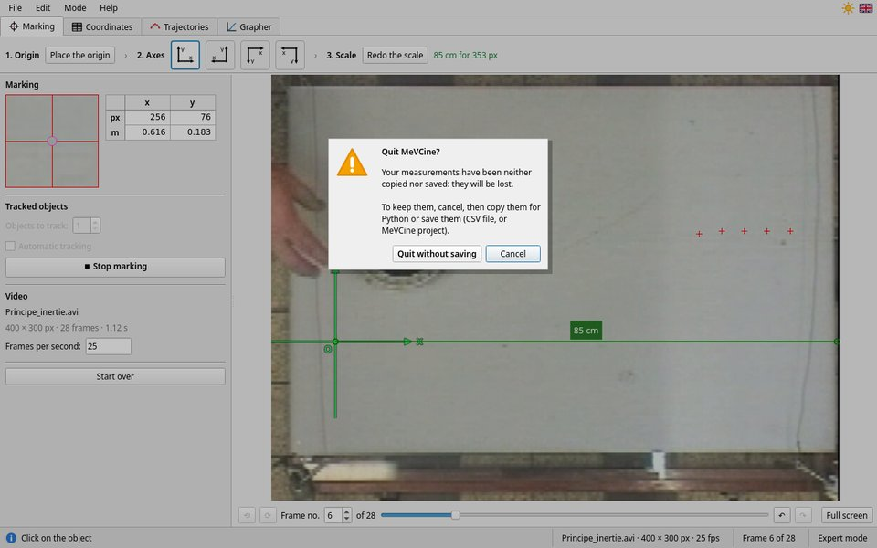

Exporting the measurements
The table, copying for Python, the CSV file, projects
The table of measurements
The table (on the right in simple mode, Coordinates tab in expert mode) has one row per marked frame:
t (s): the time of the frame, counted from the first marked frame, which is at t = 0;x (m),y (m): the coordinates of the object in your axes. With several objects:x1,y1,x2,y2… Without a scale, they are in pixels:x (px);- ⌖: redo this measurement.
On screen, numbers follow the language of the interface. The exports always use a decimal point, which Python and spreadsheets understand. Only the frames where all the objects are marked are exported: all the lists have the same length.
Copy for Python
📋 Copy for Python (step 6, Coordinates tab, File menu, or Ctrl+C) puts a text ready to paste on the clipboard:
import numpy as np # MeVCine measurements — video: fall.mp4 # t: time in s; x, y: positions in m lst_t = np.array([0.0, 0.04, 0.08, 0.12]) lst_x = np.array([0.1, 0.2, 0.3, 0.4]) lst_y = np.array([0.5, 0.48, 0.42, 0.33])
Paste it with Ctrl+V at the beginning of your Python program (or in a notebook cell), then write your calculations after it, for instance:
import matplotlib.pyplot as plt
# horizontal speed between two successive frames
vx = (lst_x[1:] - lst_x[:-1]) / (lst_t[1:] - lst_t[:-1])
print(vx)
plt.plot(lst_t, lst_y, "o-")
plt.xlabel("t (s)")
plt.ylabel("y (m)")
plt.show()
Numbers have 6 significant digits. With several objects, the lists are named lst_x1,
lst_y1, lst_x2… “✔ Copied” stays shown as long as the measurements have not changed since
the copy.
The CSV file
💾 Save as CSV… writes a standard file: a comma between columns, a decimal point, a header row.
t (s),x (m),y (m) 0,0.1,0.5 0.04,0.2,0.48 0.08,0.3,0.42
To read it in Python:
import numpy as np
lst_t, lst_x, lst_y = np.loadtxt("fall.csv", delimiter=",", skiprows=1, unpack=True)
A spreadsheet set to a language that uses a decimal comma may need to be told that the file uses a decimal point: choose “English (USA)” as the language of the import.
Saving an image
In expert mode, Save in the Trajectories tab writes the drawing (trajectory, chronophotography, motion diagram) as PNG or JPEG; the one of the Grapher writes the graph as PNG: handy for a report.
Projects
File › Save the project… (Ctrl+S) writes a .mevcine
file: the path of the video, the axes, the scale (and its unit), the frame rate and all the measurements.
File › Open a project… reopens it, at the frame after the last marked one.
The project does not contain the video: keep the video next to the project (copy both files together onto your USB stick). Otherwise, the “Video not found” message tells which file is missing.
Nothing is lost without warning

- Confirmation: quitting, starting over or opening another video while the measurements have been neither copied, nor exported, nor saved: MeVCine asks first. Enter does not confirm; Esc cancels.
- Automatic backup: the work in progress is saved by itself, every two seconds if it has changed.
- Recovering: after a crash or an accidental closing, start MeVCine again, then File › Recover previous work…. The video must still be in its place.